Remanufactured Carburetors
We're proud to offer excellent quality remanufactured carburetors, at attractive prices. We have remanufactured and rebuilt carbs available for most cars and trucks --- Domestic, Asian and some European models. Let our experts help select the right carb for your needs. We support most brands, including:
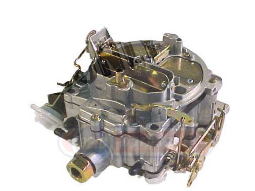 |
• Holley | • Ford | • Hitachi |
| • Carter | • Mikuni | • Nikki | |
| • Rochester | • Aisan | • Stromberg | |
| • Autolite | • Keihin | • Weber | |
| • Motorcraft | • Honda | • Zenith | |
Here are some reasons why our quality excels:
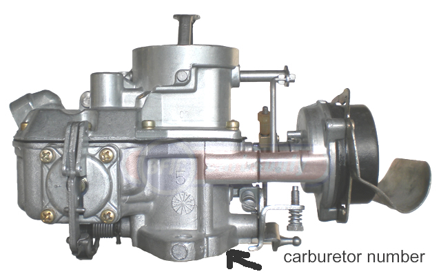 |
• Stock carburetor 1Bl motorcraft For 1965 to 67 With auto choke 170-200 eng. | |
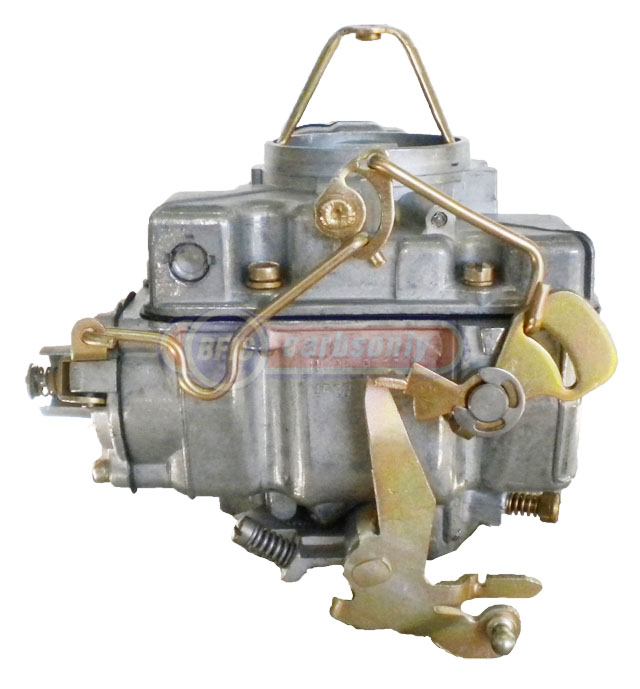 |
• Holley carburetor 1bl Holley Model 1940 with auto choke can be use for 1965 - 1969 mustang, with 170 and 200 eng. | |
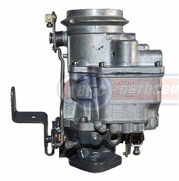 |
|
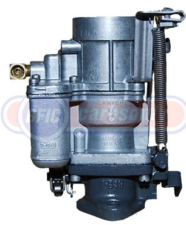 |
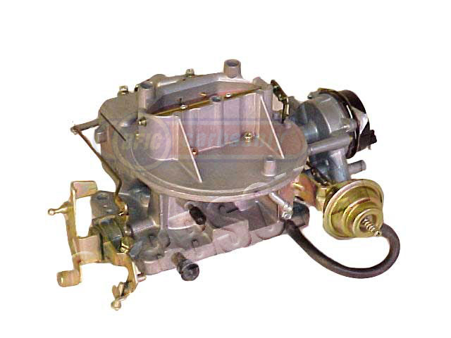 |
• Stock
replacement carburetors are built to the original manufacturers' specifications.
This means they are correct for stock vehicles, and they qualify as Original
Equipment in the many areas where O.E. is necessary in order to meet regulations. |
|
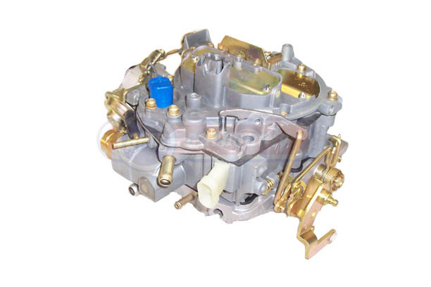 |
• Our Rochesters have fully re-bushed main throttle shafts. Plus the computer-controlled "electronic" models have guranteed Mixture Control Solenoids, Throttle Position Sensors and new choke thermostats, for superior performance and reliability. |
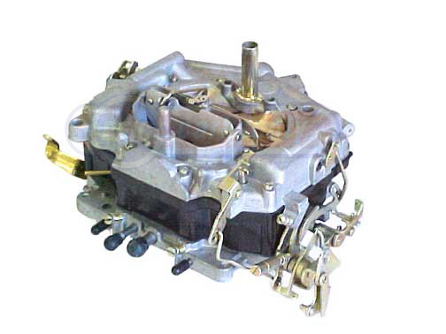 |
• Our Carter Thermo Quads. |
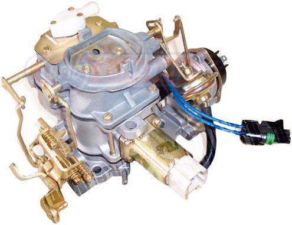 |
• Our 2-barrel Carter BBD's for computer-controlled Jeeps are built with remanufactured feedback solenoids, or "stepper motors." These solenoids are not available new. Ours are tested and guaranteed, helping assure the best Jeep carb available. |
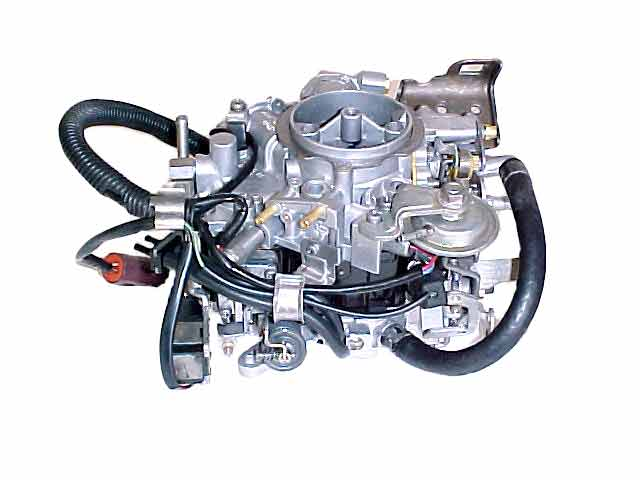 |
•
The Asian brand carburetors include Mikunis, Keihins for Hondas, Aisans,
Hitachis and Nikkis. These carburetors are usually very complex. Ours
are built with the greatest experience and expertise available, for superior
quality and customer satisfaction.
|
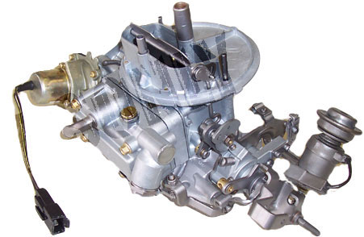 |
• Our governor carburetors for commercial trucks are built to the highest standards for quality and reliability. Two-barrel and four-barrel cores in stock, along with some finished Holleys and Rochesters. |
|
The remanufactured carburetors we sell are guaranteed for 12 months against defects in materials and workmanship. See "FAQ's" for details.
Most remanufactured carburetors are sold on a "core exchange" basis. A refundable core deposit is usually required. Go to "FAQ's" for more info.
Over the past few years we have supplied carburetors, rebuild kits and other fuel system parts for most makes of cars and trucks on the planet, including:
• Acura • AMC • Aston Martin • Audi • Austin • Austin Healey • Avanti • BMW • British Ford • Buick • Cadillac • Checker • Chevrolet • Chevy Truck • Chrysler • Dodge • Dodge Truck • Datsun • DeSoto • Edsel • Ferarri • Fiat • Ford • Ford Truck • Geo • GMC • Honda • Hudson • Hyundai • International • Isuzu • Jaguar • Jeep • Kaiser • Lincoln • Lotus • Mazda • Mazda Truck • Mercedes Benz • Mercury • MG • Mitsubishi • Mitsubishi Truck • Nissan • Nissan Truck • Oldsmobile • Opel • Packard • Pantera • Plymouth • Pontiac • Porsche • Shelby • Studebaker • Subaru • Suzuki • Toyota • Toyota Truck • Triumph • VW • Volvo • Willys • Yugo. If your vehicle is not listed here, be sure to ask.

Our business is built on a foundation of quality, service and integrity.